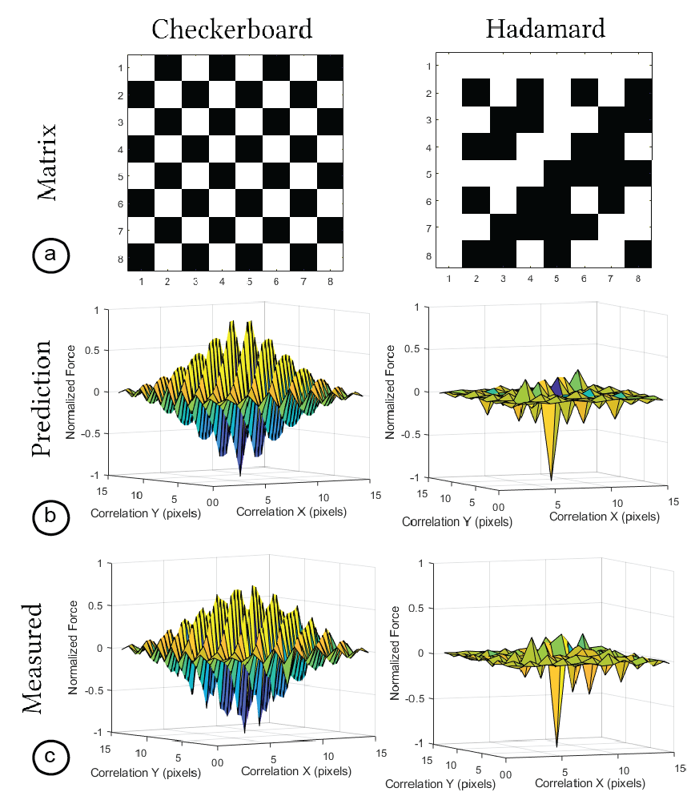

Mixels: Fabricating Interfaces using Programmable Magnetic
Pixels
Figure 1. Mixels are interfaces made from programmable magnetic pixels. Users can create Mixels using our custom design
and fabrication pipeline: (a) an inexpensive hardware add-on consisting of an electromagnet and hall effect sensor clipped on
to a 3-axis CNC can both write and read magnetic pixels, (b) the resulting magnetic interfaces can be programmed to attract
and repel only in specific configurations and are otherwise agnostic, (c) this enables a variety of applications, ranging from
selectively paired yet visually identical objects, to haptics and guided assembly.
In this paper, we present Mixels, programmable magnetic pixels
that can be rapidly fabricated using an electromagnetic printhead
mounted on an off-the-shelve 3-axis CNC machine. The ability to
program magnetic material pixel-wise with varying magnetic force
enables Mixels to create new tangible, tactile, and haptic interfaces.
To facilitate the creation of interactive objects with Mixels, we pro-
vide a user interface that lets users specify the high-level magnetic
behavior and that then computes the underlying magnetic pixel
assignments and fabrication instructions to program the magnetic
surface. Our custom hardware add-on based on an electromagnetic
printhead and hall effect sensor clips onto a standard 3-axis CNC
machine and can both write and read magnetic pixel values from
magnetic material. Our evaluation shows that our system can reli-
ably program and read magnetic pixels of various strengths, that we
can predict the behavior of two interacting magnetic surfaces be-
fore programming them, that our electromagnet is strong enough
to create pixels that utilize the maximum magnetic strength of
the material being programmed, and that this material remains
magnetized when removed from the magnetic plotter.
1. Introduction
Advances in digital fabrication tools have enabled users to fabri-
cate objects with a wide range of properties by modifying physical
parameters, such as the color [37 ], surface texture [38 ], and compli-
ance [ 19 , 22 ] of objects. More recently, digital fabrication tools have
also been used to fabricate objects with other functional properties,
such as custom acoustic [10] and optical [45] behaviors.
Magnetic materials, however, still remain far behind this digital
fabrication revolution [11 ] despite the fact that magnetic materials
hold great promise for interactive applications. For example, re-
searchers used magnets to create novel tangible interfaces (MechaM-
agnets [ 46]), to produce custom tactile sensations (MagneLayer [ 42]),
to guide the assembly of 3D objects (DynaBlock [36 ], ElectroVoxel [ 21],
Stochastic Self-assembly [20]), and to create actuated interfaces (Pro-
grammable Polarities [ 24 ]). However, all of these works either use
off-the-shelf magnets (MechaMagnets [ 46], DynaBlock [ 36 ]) or re-
quire manual construction of the customized magnetic materials
(FluxPaper [26], MagneLayer [42]).
More recently, researchers also started to automate the fabrica-
tion process of custom magnetic materials. For instance, Magnetic
Plotter [ 40 ] is a 2D plotter that stamps custom magnetic patterns
onto magnetic sheets using two permanent magnets to provide
interaction. Although this method supports programming a variety
of patterns, Polymagnets [ 1 ] introduced a commercial product that
expedites the programming of magnetic pixels and developed a
method to create magnets with unique applications such as non-
contact attachment. However, researchers have not yet investigated
how to create a design and fabrication pipeline for programmable
magnetic pixels that are selectively attractive, repulsive and agnos-
tic between multiple objects.
In this paper, we introduce Mixels, the first digital design and
fabrication pipeline that creates interfaces based on programmable
magnetic pixels that exhibit selectively attractive and repulsive
behaviors in specific configurations and that otherwise remain ag-
nostic. Mixels fabrication hardware consists of a hardware add-on
with an electromagnet for writing magnetic pixels and a hall effect
sensor for reading magnetic pixels mounted on a 3-axis CNC ma-
chine. Mixels design interface allows users to create magnetic pixel
patterns that exhibit desired attractive, repulsive, or agnostic behav-
iors. On export, the designed magnetic pixel patterns are translated
into fabrication instructions, allowing the plotter to program mag-
netic faces without manual intervention. Our evaluation shows
that our system can reliably program magnetic pixels (within 0.3%
accuracy) of different strengths, that we can identify the polarity of
a programmed pixel via our magnetic reader, that our chosen elec-
tromagnet is strong enough to create pixels of maximum magnetic
strength (310 Gauss in either polarity for our chosen magnetic ma-
terial), and that our magnetic material remains highly magnetized
when removed from the magnetic plotter (exhibiting no detectable
attenuation once programmed). Finally, our evaluation shows that
we can accurately predict the interaction between two magneti-
cally programmed surfaces, which allows us to create interfaces
with strong interactions in a chosen configuration while remaining
magnetically agnostic otherwise. We illustrate this with a number
of applications that enrich interactions of physical objects through
connection, sensing, and tactile sensation.
In summary, this paper contributes
- A hardware add-on that can write and read arbitrary 2D mag-
netic patterns of continuously variable magnetic strengths.
- A user interface that lets users design and visualize magnetic
patterns with selectively attractive and repulsive behaviors.
- A technical evaluation of our ability to select, program, and
read magnetic pixels from magnetic sheets.
- Novel applications enabled by our programmable magnetic
patterns, such as selective pairing, guided assembly, and
vibration and haptics.
Figure 2. Benefits of Mixels. Mixels leverages its ability to program 2D patterns to construct interfaces that are attractively
selective using matrix algebra. It supports designing and plotting arbitrary 2D magnetic patterns in a pixelwise manner, ex-
tending the ability to plot lines. It uses digital control by affixing a hardware add-on to a CNC for precision plotting. It uses
an electromagnet rather than permanent magnets for plotting, the polarity of which can be digitally controlled. The current
through this electromagnet can be continuously regulated to program continuously valued magnetic pixels. By encoding mu-
tually orthogonal matrix values as magnetically programmed pixels, we can program interfaces that are not just attractive or
repulsive, but agnostic to each other. Using a Hall effect sensor on our add-on, we can read back programmed magnetic pixels
for further manipulation and re-programming. Our user interface supports users to specify behaviors in terms of attraction,
repulsion and agnosticism, and can compute the underlying magnet assignments automatically.
2. Related Work
Many HCI researchers have explored the use of magnets to create
novel tangible and haptic interactions since magnets are inexpen-
sive and widely available, and have also embedded them into cus-
tom 3D printed objects. To further customize magnetic behavior,
researchers have also recently started to create custom programmed
magnetic sheets
2.1 Magnets for Tangible and Haptic
Interaction
Many researchers have leveraged magnets to create novel tangi-
ble and haptic interactions. One approach focuses on using pas-
sive magnets with sensing techniques to create new interaction
modalities. For example, Magnetic Appcessories [ 5 ], GaussBits [ 17 ],
GaussStones [ 18 ], and Geckos [ 15 ] employ a magnetometer to de-
tect the states of physical inputs and positions of magnetic tangible
tokens. Similarly, MagGetz [9 ], MagnID [ 6], GaussBricks [16 ], Gauss-
Marbles [12 ], Magnetic Ring [ 8], MagneTrack [2 ] also demonstrate
various applications including interactive games and input controls.
By combining these sensing approaches with interactive touch dis-
plays, these systems allow users to manipulate and interact with
digital information via the magnetic tangibles.
Another approach focuses on methods to actuate or otherwise
manipulate magnets for dynamic behaviors, using both permanent
magnets and electromagnets to create actuated tangible and tactile
interfaces. For example, Actuated Workbench [28 ], ShiftIO [33 ], Flux-
Marker [35 ], and Reactile [34 ] move and control passive magnets on
a 1D or 2D surface to create actuated tangible interfaces. ZeroN [14 ]
uses an electromagnetic control system to levitate and manipulate
permanently magnetic objects for mid-air tangible interaction. Us-
ing electromagnets, researchers have explored various applications,
such as creating haptic interfaces (Omni [13 ], MAGHair [ 7]), provid-
ing drawing guidance (dePENd [39 ]), and supporting collaboration
(PICO [ 29]). Taking inspiration from these works, we explore how
programmable magnetic pixels can expand the range of applications
and design space of current magnetic interfaces.
2.2 Embedding Magnetic Behavior into Objects
Recently, researchers have also used magnets to add functionality
to 3D printed objects. For example, Programmable Polarities [20 ],
MagTics [ 30], and 3D Printed Electromagnets [31 ] leverage elec-
tromagnets to make the 3D printed objects interactive. However,
the use of electromagnets requires power to operate, which de-
creases portability and ease of fabrication. Researchers have thus
also utilized passive magnets to build unpowered, inexpensive inter-
active devices. For example, Mechamagnets [46 ] demonstrate how
embedded static magnets in 3D printed parts can deliver various
mechanical behavior for physical inputs. Embedded magnets for
3D printed objects are used to provide haptic feedback (Magneto-
Haptics [25 ], Ogata et al. [27 ]), construct objects (Dynablock [36 ]),
and prototype electronics (Oh, Snap! [32], LittleBits [4]). However,
existing works only use discretely sourced, off-the-shelf magnets.
In contrast, our work explores how to digitally program magnetic
materials with custom patterns to create objects capable of new
forms of interaction.
2.3 Programmed Magnetic Sheet
To create more custom magnetic behaviors, researchers also investi-
gated how to program magnetic sheets. A programmable magnetic
sheet is a soft magnetic sheet that can be programmed into a de-
sired magnetic pattern. HCI researchers have demonstrated the
great potential of this approach to create custom tactile, haptic,
and tangible interfaces. For example, Magnetic Plotter [40 ] explored
how to fabricate programmable magnetic sheets that can generate
various different tactile sensations for haptic interaction. To pro-
gram the sheet, Magnetic Plotter uses a neodymium magnet that is
stronger than the sheet, which allows greater flexibility than just
using a non-programmed approach such as Bump Ahead [ 44]. Flux-
Paper[26 ] also explores a magnetically programmable paper, which
allows physical movement and dynamic actuation. Beyond a simple
pattern, MagneLayer [ 42] introduces a layered approach, which can
create more complex 2D patterns by combining different patterns
of the sheet. By leveraging these capabilities, Magnetact [ 41 ] and
Magnetact Animals [43 ] demonstrate various applications in kinetic
toys or interactive haptic interfaces for touchscreen devices. Finally,
Polymagnets [ 1] is a commercial product that leverages dedicated
machinery to program individual pixels, creating magnets with
unique applications such as non-contact attachment and rotational
locking between two objects. However, researchers have not yet
investigated how to create a design and fabrication pipeline for
programmable magnetic pixels that 1) supports interfaces with
selectively attractive, repulsive and agnostic behaviors between
multiple objects, 2) supports digitally reading magnetic pixels to al-
low for local reprogramming, and 3) is inexpensive and reproducible
by users; since Polymagnets is a commercial product, the fabrica-
tion device is not available to researchers and it is unclear how
users are supported in creating magnetic pixel layouts of desired
behaviors. Our work is thus the first to develop a digital design and
fabrication pipeline to support users in creating interfaces based
on programmable magnetic pixels that exhibit selectively attrac-
tive and repulsive behaviors in specific configurations and that
otherwise remain agnostic.
3. Mixels: Plotting Magnetic Pixels
Mixels are programmable magnetic pixels that can be rapidly fab-
ricated using an electromagnetic printhead mounted on an off-
the-shelve 3-axis CNC machine. To program magnetic pixels, our
system consists of (1) the magnetic plotter hardware, (2) the control
software that sends commands to the magnetic plotter hardware,
and (3) a design user interface that allows the user to specific desired
magnetic behaviors. Figure 1 illustrates each of the components of
our system and highlights several application scenarios.
Magnetic Pixels Concept: At a high-level, the goal of our system
is to magnetize each “pixel” of a magnetic sheet to create a pixel-
wise magnetic pattern. Our hardware applies a magnetic field to
specific locations on the magnetic sheet to magnetize and demagne-
tize pixels one by one, allowing us to program the polarity of each
pixel in the soft magnetic sheet. The programmed magnetic pixels
allow users to create pairs of magnetic interfaces that (1) attract, (2)
repel, and (3) are agnostic (i.e., neither attract nor repel each other)
to each other in specific configurations. Figure 2 further illustrates
the concept and design space of magnetic pixels. By leveraging this
functionality, users can create various applications, ranging from
selective pairing, to guided assembly and haptics.
Design and Fabrication Pipeline: To support users in creating
and reprogramming magnetic pixel patterns, we created a design
and fabrication pipeline that automates fabrication and abstracts
away the underlying domain knowledge about how magnetic pixels
need to be laid out to accomplish attraction, repulsion, and agnosti-
cism via a design tool that allows for high-level input. We modified
an off-the-shelve 3D printer (SnapMaker) and use its 3-axis motion
platform to actuate our magnetic plotter hardware add-on, which
consist of an electromagnet and hall effect sensor to both write and
read the polarity of magnetic sheets at each pixel individually. The
hardware add-on, control software and high-level design input via
the user interface allow the user to create uniquely patterned soft
magnetic materials.
Magnetization and Demagnetization Cycle: To create magnetic
pixels, users insert the magnetic sheet into the plotter. The electro-
magnet is then turned on and polarized either in ’North’ or ’South’
direction to increase the magnetic sheet’s strength until maximum
saturation. The electromagnet is then turned off and the user can re-
moved the magnetic sheet from the magnetic plotter. After removal
from the magnetic plotter, the strength of the magnetic sheet drops
only marginally, i.e. retains a significant portion of its magnetic
strength. If the user wishes to reprogram the magnetic pattern,
they can reinsert the magnetic sheet in the magnetic plotter, which
demagnetizes the soft magnetic sheet by turning on the electro-
magnet in the opposite direction of the pixel that needs to be reset,
before starting the process of reprogramming the new magnetic
pixel value in any polarity (North or South).
Figure 3: Magnetic plotter: (a) add-on mounted onto a 3-axis
CNC. (b) add-on electronics viewed from above. (c) Close-
up of the plotting end effector, consisting of an cone-tipped
electromagnet for writing and a hall effect sensor for read-
ing magnetic programs.
4. Magnetic Plotter Hardware Add-on
To make our method available to a wide range of users, we build
our magnetic plotter as an inexpensive add-on that can be clipped
on to a 3-axis CNC (e.g., we use the SnapMaker 3-in-1). Our add-on
consists of an Arduino Nano microcontroller, an electromagnet, an
H-bridge, and a hall effect sensor encased in a 3D-printed housing,
costing only $62 in parts. We use our add-on to program commer-
cially available and inexpensive soft magnetic sheet (X-bet, 26 mil
thickness) that costs $0.008/cm2.
Magnetic Sheet Material: We chose a "soft" magnetic sheet mate-
rial because soft magnetic materials are more easily reprogrammable
than hard magnetic materials. This is because soft magnetic ma-
terials are more easily demagnetized under a magnetic field. In
addition, once demagnetized, they can be reprogrammed (that is,
remagnetized) using a weak magnetic field. However, the draw-
back is that soft magnetic materials have a lower overall magnetic
strength than magnetically hard materials.
Electromagnet: We chose an electromagnet over a permanent
magnet because we can change the polarity of an electromag-
net digitally by changing the direction of current applied to it.
In addition, electromagnets allow us to continuously vary the mag-
netic strength of each pixel by regulating the magnitude of current
through them [40 , 42 ]. However, cylindrical electromagnets of the
same diameter as permanent magnets exhibit less magnetic strength
and thus, the resulting magnetic pixels are weaker. To create mag-
netic pixels of the same strength without trading-off resolution,
we therefore shaped the electromagnet into a cone that narrows
where it touches the magnetic sheet material. Since the narrow tip
concentrates the magnetic flux, our shaped electromagnet creates
a stronger magnetic pixel than a permanent magnet for the same
pixel size.
Writing Magnetic Pixels: To create magnetic pixels, we use an
electromagnet that is comprised of a cylindrical permalloy core
(10mm diameter, 20mm length) wrapped with 250 turns of 20 AWG
wire, with the last 5mm of one end filed to a cone whose tip writes
3mm wide pixels. The core has a relative permeability of ùúáùëü = 90000,
a factor of 40 greater than most brittle ferrite cores typically used
for electromagnets. The electromagnet is coupled to the hardware
add-on via a spring-loaded pogo pin, giving it compliance as the
plotter touches it to the sheet surface. To drive the electromagnet
bidirectionally, we connect it to a full H bridge we built using
four relays (Omron 1718H1) driven by 2 MOSFETs (IRFZ44N) and
shunted with flyback diodes (1N4752A). Given these features, our
method allows us to program magnetic pixels in both polarizations
using a single magnet without user intervention. Each pixel requires
0.7 seconds to program, drawing 130W from an offboard power
supply to energize the electromagnet during this period and 200mW
otherwise. We recorded no excessive heating of the electromagnet,
and no observable wear on the CNC even after prolonged use
(i.e., we programmed 1500 pixels consecutively to test the add-on’s
durability in operation).
Reading Magnetic Pixels: To read magnetic pixels programmed
onto the sheet, we use a hall effect sensor (MUZHI 49E) conditioned
by a voltage comparator (LM393) on a breakout board. This allows
us to read both the direction and magnitude of the magnetic polari-
ties of individual pixels and to store these values digitally, which
can be later used with our user interface to copy, edit and "paste"
(program) pixels, even if the pixel value was previously unknown
to the user. In contrast, passive magnetic viewing film can only
detect the magnetic strength but cannot distinguish "North" from
"South". In addition, since it is an analog method the results seen
under viewing film cannot be easily transferred to digital tools.
Figure 4. Mixel’s user interface with three different design modes: (a) Individual Pixels: users can edit each pixel directly and
assign a value of either ’North’, ’South’, or ’Demagnetized’, (b) Pair Generation: users can create pairs of matrices which are
maximally attractive to each other in specific configurations, but agnostic to other pairs, (c) Canvas interaction: allows users
to define how a smaller matrix should interact with a larger matrix, i.e. either attract, repel, or be agnostic at each location.
5. Control Software
Our control software sends (1) movement commands to the CNC
machine to move the hardware add-on over a specific magnetic
pixel, and (2) commands to the electromagnet and hall effect sensor
for writing and reading magnetic pixel values at the specific location.
The CNC and the hardware add-on’s microcontroller (Arduino) are
both connected to a laptop via USB cables. We run a local server on
the laptop to communicate with the CNC machine and the add-on.
A python script on the server accesses the CNC’s and hardware
add-on’s serial channels using the Pyserial library to both send
commands and retrieve data via the serial port.
Writing Magnetic Pixels: To plot a pattern, users run a python
script with the ’plot’ parameter and input a previously designed
magnetic pixel matrix (.pkl file format). The .pkl file contains the
magnetic pixel matrix as a 2D array with elements stored as 1 for
’North’ pixels and -1 for ’South’ pixels. To plot the matrix, the CNC
moves to the first pixel and after the pixel has been programmed by
the electromagnet moves translationally (in X or Y) one pixel width
at a time. Between each pixel, the CNC rises and descends by 3 mm
(in Z) to clear the sheet surface. Unchanged pixels are defined as 0
in the .pkl file and the CNC skips these to save plotting time. After
the CNC moved to a specific pixel location, the python script sends
a command to the microcontroller connected to the electromagnet
to polarize the electromagnet in the correct direction (i.e., either
’North’ or ’South’) before turning it off.
Reading Magnetic Pixels: To read a pattern, users run the python
script with the ’scan’ parameter and the size of the matrix as input.
To read the matrix, the CNC moves to the first pixel and after the
pixel has been read by the hall effect sensor moves translationally
(in X or Y) one pixel width at a time. Similar to plotting, between
each pixel, the CNC rises and descends by 3 mm (in Z) to clear the
sheet surface. After the CNC moved to a specific pixel location, the
python script sends a command to the microcontroller connected to
the hall effect sensor to read the magnetic pixel value. The magnetic
pixel readings are then saved as a .pkl file. The .pkl file can then
be uploaded to the user interface, which then shows the magnetic
polarity at each pixel.
6. Designing Magnetic Pixel Interactions
We developed a user interface (Figure 4) to support the design of
magnetic pixel layouts with desired behaviors. The user interface
allows users to design and visualize custom magnetic patterns and
their interactions and automatically converts these patterns into
instructions for plotting them with the hardware add-on. The user
interface also visualizes magnetic pixel patterns that were scanned
from a previously programmed magnetic surface, which allows
users to discover, copy or edit previously programmed patterns for
new applications. To showcase these features, our user interface
supports three design modes: editing individual pixels, pair genera-
tion, and Canvas interaction. The user interface is built as a web
application on an Amazon Web Services EC2 instance. We created
the backend with the Django framework, and used React to design
the user interface itself.
6.1 Design Modes for Magnetic Pixel Patterns
Editing Individual Magnetic Pixels: In this mode, the user can
edit each magnetic pixel individually (Figure 4a). Users first click the
’Generate’ button, which creates a 2D matrix of user-defined size
consisting of individual pixels. Users can then click each individual
pixel to assign them as ’North’, ’South’, or ’Demagnetized’. The
’Export’ button then saves the pixel assignments as a matrix (.pkl
file) with values of 1 for ’North’ pixels and -1 for ’South’ pixels,
which is used by the control software to program the magnetic
pattern using the hardware add-on. Instead of starting with an
empty matrix, users can also use the ’Import’ button to load a
previously scanned magnetic pixel pattern. Users can then edit
individual pixels of the scanned matrix to re-program the scanned
pattern for new applications. When hitting the ’Export’ button, the
exported matrix generated will only account for changed pixels
(i.e., saves all unchanged pixels as ’0’ values), which saves plotting
time when only a few pixels require changes.
Pair Generation: This mode allows creating pairs of magnetic
surfaces that are attractive to each other when overlapping in one
specific configuration but that are not attractive to each other in
other configurations or when overlapping with other programmed
surfaces. Users can generate a desired number of pairs by entering
the number of matrices and then clicking the ’Generate’ button.
This will then display the magnetic matrix pairs in the user inter-
face. Figure 4a shows that the matrices in each pair are opposite,
i.e. where one pixel is black (’North’), the other is white (’South’),
such that they perfectly attract when they are directly superim-
posed. However, when there is a translation of one or more pixels
between the surfaces, they will be agnostic to each other due to the
orthogonality in these matrices. Similarly, the programmed pairs
are also agnostic to the magnetic matrices in the other generated
pairs in all configurations. After generating the pairs, users can use
the ’export’ button to export the matrices collectively for plotting
as a set of .pkl files.
Canvas interaction:While the previous mode allowed users to
define pair-wise interactions, the ’Canvas interaction’ mode al-
lows users to define how a smaller magnetic matrix should interact
across a larger magnetic area, or ’canvas’ (Figure 4c). To define the
interaction, users first use the ’choose token’ button to load the
smaller matrix, which they previously designed in the user inter-
face. Next, they define the larger magnetic matrix by specifying the
number of rows and columns and then initializing the larger mag-
netic matrix by clicking the ’generate’ button. The generated larger
magnetic matrix is then automatically partitioned into ’metapixels’
whose size is equal to the smaller magnetic matrix. Users can then
click each metapixel to assign whether the smaller magnetic matrix
should interact with that region attractively, repulsively, or agnos-
tically. In Figure 4c, the larger magnetic matrix can be designed as
topological hills and plateaus on a map; a smaller magnetic matrix
affixed to a user’s finger will feel a repulsive force when moved
over a red region, indicating a hill, but remain agnostic elsewhere.
After programming the surface, users click the ’Export’ button to
export the .pkl files for programming both magnetic surfaces.
6.2 Selective Attraction and Repulsion
Both in the ’pair generation’ and the ’Canvas interaction’ design
mode, our user interface generates patterns that attract or repel
only when aligned in specific locations and orientations. In all other
configurations, those patterns are agnostic.
Selective Attraction: To accomplish selective attraction, we gen-
erate one matrix of the pair as a so-called ’Hadamard’ matrix, and
the second matrix of the pair as the complement of the Hadamard.
In a Hadamard matrix, every row and every column are orthogonal.
Thus, when the complement of the Hadamard is moved across the
original Hadamard matrix, they are agnostic in each configuration
except when in perfect alignment, which is when they attract. To
initialize a Hadamard matrix with orthogonal rows and columns,
we use a recursive generation algorithm [3].
Selective Repulsion: Selective repulsion works in the same way
to selective attraction, except that the second matrix is identical
to the original Hadamard matrix. Thus, when both matrices are
moved across each other, they are agnostic in each configuration
except when in perfect alignment, which is when they repel.
Multiple Pair Agnosticism: While the method described above
works to create selective attraction and repulsion for a single pair
of magnetic surfaces, the algorithm needs to be extended when
multiple pairs of surfaces need to be selectively attractive/repulsive
both within the pair and with other pairs. For instance, in the ap-
plication example shown in Figure 12, a letter should only connect
to its correct neighbor and not to other letters to form the correct
word. To accomplish selective attraction/repulsion across multi-
ple pairs of magnetic surfaces, we create new pairs of Hadamard
matrices by permuting the rows of the original matrix generated
recursively [ 3 ]. Once many such pairs have been created, we com-
pute the 2D cross-correlation between these permuted matrices and
then choose only those matrices that maximize mutual agnosticism
between pairs [23].
7. Evaluation
We evaluated how reliably the electromagnet can program the
magnetic sheet, if the electromagnet can fully saturate the sheet to
endow it with its greatest possible strength, how long the magnetic
sheet remains magnetized when removed from the electromagnet,
how accurately we can create pixels with continuous magnetic
strength, and how accurately we can read magnetic pixel values.
Figure 5: Electromagnet B-H curve. The electromagnet satu-
rates at 0.34T at both (a) positive (’North’) and (b) negative
(’South’) ends.
7.1 Reliability of Magnetic Programming
We first evaluated how reliably the magnetic strength of individual
pixels can be programmed, which is necessary to ensure consistent
behavior.
Procedure: We collected data by energizing the electromagnet
between 0A and 10A, in increments of 1A, in both North and South
directions. For each applied current, we recorded the magnetic field
at the conic tip of the electromagnet using a Gaussmeter (AlphaLab
GM-2). We repeated the measurements 4 times, and computed the
mean and standard deviation at each increment.
Results: Figure 5 shows the resulting magnetization curve, also
known as the B-H curve, for the electromagnet. The electromagnet
saturates at 0.302T and the measurements exhibit an average stan-
dard deviation of 1.01mT, yielding a highly reliable field that can
be generated within 0.3%. The curve is symmetric and exhibits no
hysteresis, allowing programming both North and South polarities
reliably. The electromagnet can be turned completely off by remov-
ing power from the coil; this is illustrated by the curve intersecting
the origin, showing that the induced B field collapses when the H
field is set to 0, signifying very low coercivity and remanence.
Figure 6: Sheet hysteresis curves when the sheet is fully sat-
urated (major loop, blue) and when it is less than fully sat-
urated (minor loops, red). Major loop is labeled to indicate
(a) positive and (b) negative saturation; (c) positive and (d)
negative remanence; (e) positive and (f) negative coercivity.
7.2 Maximum Magnetic Field Strength
Next, we evaluated if the electromagnet is strong enough to fully
saturate the magnetic sheet, which allows creating applications that
leverage the material’s maximum magnetic strength (flux density).
Procedure: Data was generated by touching the conic end of the
electromagnet to the sheet material, energizing the electromag-
net, then de-energizing the electromagnet and measuring the field
strength of the material sheet where it was programmed. We in-
creased the strength of the electromagnet’s magnetic field by in-
creasing the current applied to it from 0A (Figure 6f) upwards in
0.6A increments, measuring the field strength of the sheet where
it was programmed with each increment. We continued this pro-
cedure until an increase the electromagnet’s field produced no
additional magnetization of the sheet (Figure 6a).
Results: Figure 6 shows the plotted data starting from 6(f) and end-
ing at 6(a). The procedure showed that an external field generated
using ùêºùëöùëéùë• = 10ùê¥ was the minimum current required to saturate
the sheet. The curve shows that our electromagnet design is strong
enough to saturate the sheet (at 0.0344T), generating as much force
as possible for applications. In contrast, an equivalently sized pixel
programmed by a cylindrical permanent magnet (neodymium, 3mm
diameter, 6mm length) was 0.032T.
7.3 Permanence of Magnetic Field
We also evaluated the ability of pixels programmed in the magnetic
sheet to stay magnetized after programming; their remanence, and
the ease with which they can be de-magnetized; their coercivity.
Procedure: We begun by following the procedure used to evaluate
saturation, detailed above, using ùêºùëöùëéùë• = 10ùê¥ to saturate the sheet
(Figure 6a). We then de-energized the electromagnet, reducing the
current in increments of 0.6A, until the applied current was 0A,
and measured the field strength of the material. The magnetic
field strength of the sheet with the electromagnet turned off is
shown in Figure 6(c), and is the material’s remanence. We then
continued by applying current to the electromagnet in the opposite
direction; a negative current in Figure 6, increasing the magnitude of
this negative current in increments of 0.6A until the field strength
of the sheet was 0T. This is indicated in Figure 6(e), and is the
material’s coercivity. The same procedure used to generate the
curve 6(f,a,c,e), is used to plot the remaining curve 6(e,b,d,f) by
continuing to polarize the electromagnet in the opposite direction
starting from 6(e). We repeated this 4 times and computed the mean
and standard deviation at each increment.
Results: Unlike for the electromagnet, the magnetization curve
for the magnetic sheet generated in Figure 6 reveals a phenome-
non known as magnetic hysteresis, which is the dependence of the
current magnetization of the sheet on its magnetic history. The
hysteresis generated by saturating the material, shown in blue, is
known as the major loop. The asymmetry in this hysteresis is what
enables the sheet to stay magnetized after programming. The hys-
teresis curve indicates a low coercivity, indicating that the material
is easily re-programmed with a weak external magnetic field, and
exhibits high remanence, illustrated by the negligible attenuation
of the material’s magnetic field strength after the electromagnet
is turned off following saturation. The average standard deviation
for the major loop was 6.81mT, and the standard deviation at each
point is illustrated in the figure to indicate its repeatability.
7.4 Continuous Magnetic Strength
We evaluated if we can program pixels with continuous magnetic
strengths, by reliably programming the sheet in a way that does not
fully saturate it. This results is so-called ’minor’ hysteresis loops,
as shown by red and orange curves in Figure 6.
Procedure: Data used to evaluate the minor curves were gathered
using the same strict order as for the major loop, following the
loop anti-clockwise. As mentioned previously, an external field
generated using ùêºùëöùëéùë• = 10ùê¥ fully saturates the sheet. To investigate
the effect of not fully saturating the sheet, we therefore chose
fields created with lower current using ùêºùëöùëéùë• = 3.3ùê¥, 6.6ùê¥. We then
repeated the procedure outlined in section 7.3, beginning at Figure
6(f) and following each loop anti-clockwise back to its starting
point. We repeated this 4 times for each ùêºùëöùëéùë• , and computed the
mean and standard deviation at each increment.
Results: Figure 6 shows the two magnetization curves when the
field strengths were generated with currents through the electro-
magnet of 3.3A and 6.6A. The average standard deviation for 3.3A
and 6.6A curves are 5.85mT and 6.69mT respectively, and the stan-
dard deviation at each point is illustrated in the figure. This shows
that the hysteresis loops can be utilized for programming a range
of magnetization strengths.
Figure 7: Histogram of magnetic pixel values scanned by
hall effect sensor. North- and South-oriented pixels are
clearly differentiated.
7.5 Accuracy of Reading Magnetic Pixel Values
We evaluated how accurately we can read magnetic pixel values
with our hall effect sensor.
Procedure: We programmed 150 North-oriented (with normalized
flux of -1) and 150 South-oriented pixels (with normalized flux +1),
and recorded the magnetic strength both with the hall effect sensor
and with the Gaussmeter to obtain a ground-truth estimate.
Results: The recorded magnetic pixel strengths as measured by the
hall effect sensor are shown in normalized form as a histogram in
Figure 7. North-oriented pixels are shown in red and South-oriented
pixels are shown in blue. As can be seen in the figure, the read
values exhibit significant noise with recorded values distributed
widely around their ground truths of -1 and +1. Ground-truth mea-
surements taken with a Gaussmeter showed that the programmed
values were accurate, thus the noise is introduced by the inaccuracy
of the hall effect sensor. However, since both the south and north
regions have non-overlapping distributions, we can still differen-
tiate between magnetically North- and South-oriented pixels. A
higher quality hall effect sensor would be required to accurately
measure pixels that were programmed with continuously variable
magnetic strengths.

Figure 8: Predicted and measured magnetic interactions
when two patterns, a checkerboard and a Hadamard matrix,
are cross-correlated with their negatives.
7.6 Predicted vs Measured Interaction
Finally, we evaluated how accurately we can predict magnetic in-
teractions in terms of attraction, repulsion and agnosticism.
Procedure: We created two magnetic pixel designs in our user
interface (Figure 8a): (1) an 8x8 checkerboard pattern of ’North’ and
’South’ programmed pixels, and (2) an order-8 Hadamard matrix.
We also created their complement matrices: the corresponding
magnetic pixel pattern produced by multiplying each matrix by
-1. We then translated each matrix pixel-by-pixel, in both X and Y
directions, across its complement and evaluated the resulting force
at each increment.
Simulation Results: Figure 8(b) shows the predicted interaction
between each matrix. We generated the predicted values by com-
puting the normalized cross-correlation between each matrix and
its complement. This effectively implies taking the sum of all attrac-
tive (-1) and repulsive (+1) pixel interactions, and dividing by the
number of pixels. As a result, cross-correlation values of -1 desig-
nate perfect attraction, +1 is perfect repulsion and 0 is agnosticism.
When the checkerboard matrix and Hadamard matrix are centered
on their respective complements, they are by definition attractive
at every pixel, yielding a value of -1. Elsewhere, the checkerboard
produces oscillating attractive and repulsive interactions with every
pixel-wise translation, whereas the Hadamard remains perfectly
agnostic in pure X-translation and Y-translation, and maximally
agnostic for mixed translation.
Physical Results: Figure 8(c) shows measured data. We measured
this data by first programming the patterns on magnetic sheets
(25mm side square). We then affixed one magnetic sheet onto a
scale (KUBEI pocket, 0.1mN accuracy) placed on the CNC baseplate.
The other sheet was mounted onto the CNC arm, which trans-
lated the patterns pixel-wise one pixel at a time (while keeping the
magnetic sheet in a planar orientation and 0.5mm apart from the
mounted sheet). We then recorded the force at each location using
the scale. As can be seen in Figure 8, the measured data corresponds
well visually with the simulated cross correlation, showing we can
predict magnetic interactions between arbitrarily programmed mag-
netic sheets accurately before physically programming them. The
two square faces of 25mm side length were measured to exhibit
an attractive force of 1.09N, corresponding to 1.74 kPa. In shear,
the faces could withstand 1.31N, a high value likely caused by the
exceptionally high friction coefficient (1.15) of rubber.
8 Applications
We built a number of applications to demonstrate how pixel-wise
programmed magnetic interfaces enable novel use cases.
Figure 9: Each magnetic face exhibits a unique force profile
when placed on a second magnet, which can be detected via
a pressure sensor that then lights up the corresponding LED.
Unique Force Profiles: Figure 9 shows how we can create objects
that exhibit unique force profiles. We programmed three magnetic
faces (marked green, yellow, and red) with different magnetic pat-
terns and affixed them to the bottom of 3D-printed handles. When
each of the handles is placed on a platform housing a second magnet
below a pressure sensor, the unique force profile is registered by the
microcontroller connected to the pressure sensor and subsequently
lights up the associated colored LED. We created the different force
profiles by designing the magnetic patterns in the user interface
using the mode for directly programming individual pixels.
Figure 10: Storage of objects that will only adhere to a work-
shop wall in particular locations and orientations.
Attachments with Specific Orientations: Figure 10 shows how
we can magnetically program attachments that only permit placing
objects in specific locations and orientations. We used the user
interface’s pair generation mode and after plotting the pairs, we
attach one magnetic face with double sided tape to a workshop
wall and the paired complement to the associated tool. As a result,
the tools will only bond when placed at the correct location on the
workshop wall and in the correct orientation.
Figure 11: Selectively magnetic lock-and-key systems. Col-
ored locks (solid lines) mate with keys of the associated color
(dashed line), but not others.
Selectively Pairing Objects: Figure 11 shows how we can use the
user interface’s pair generation mode to create selectively paired
locks and keys. For this, we attach one magnetic face on the key
(foreground) and the matching paired complement to the lock (back-
ground). For example, the yellow key opens a lock to the hidden
yellow surface, but not others. Keys can be programmed to open
multiple locks by plotting multiple identical lock patterns, and vice
versa. In addition, both locks and keys can be quickly reprogrammed
for new security requirements. Moreover, unlike physical keys, the
structure of the magnetic keys is invisible to the naked eye. This
therefore combines the reprogrammability and imperceptibility of
digital keys with the forces of physically actuated keys.
Figure 12: Selectively attractive faces between the cubes
guide users into the correct assembly. The letters are plot-
ted onto the top surface of the cubes and made visible with
magnetic viewing film.
Guided Assembly: Figure 12 shows how we can create structures
that guide the user how to correctly assemble them. In the example
shown, four blocks when assembled correctly form the word ’UIST’.
To ensure the blocks assemble in the correct way, we use the pair
generation mode in the user interface to program selectively mating
patterns on the faces between cubes. The result is that the cubes
adhere magnetically only when assembled correctly to form the
word, and cannot be assembled in any other way. To visualize
the letters on the top surface, we use the user interface’s mode
for programming individual pixels to draw the letters and after
plotting them onto magnetic sheet material we overlay them with
magnetic viewing film to make the magnetic pattern visible to
the user. This illustrates the selective patterns’ ability to provide
affordances that guide human assembly tasks, and our ability to
plot arbitrary magnetic patterns as visual textures.
Figure 13: A hand-held token can be programmed to exhibit
specific interactions with any location on a programmed
sheet.
Haptic Feedback: Figure 13 shows how we can create an arbi-
trarily large magnetically programmed canvas that provides haptic
feedback to a user’s finger that has a magnetically programmed
token attached to it. The canvas is programmed to exhibit repulsion
at chosen locations and agnosticism at others. Coupled with a pro-
jector, an image, or mixed reality media, this setup can be utilized
to create tactile representations of physical landscapes.
9 Limitations and Future Work
In the next section, we discuss limitations of our approach and lay
out directions for future work.
Using the Electromagnet to both Write and Read: We can fur-
ther simplify the hardware add-on by using the electromagnet to
read pixels as well as write them. To accomplish this, we can lever-
age Faraday’s law to induce a voltage in the coil as it crosses the
pixels’ flux lines. This technique has been utilized to both read and
write audio tape cassettes from a single electromagnet head for
several decades, and thus is promising for our system as well.
Continuous Pixels: Although our hardware can support pixels
with continuous magnetic strength, our user interface and control
software currently only support binary pixels of ’North’ or ’South’
direction. For future work, we plan to extend the user interface
by allowing users to assign continuous pixel values by visualiz-
ing these in grayscale and then tailoring the current through the
electromagnet accordingly during plotting via the control software.
Increasing Plotting Speed: To accelerate plotting speed, we can
affix multiple electromagnets in an array onto the add-on, which
will allow us to program multiple pixels in parallel.
Increasing Magnetic Pixel Strength: For future work, we will
investigate how to increase the magnetic pixel strength by using
materials capable of supporting higher magnetic flux densities com-
bined with more powerfully coercive magnetic plotters. This would
permit great pixel strengths for the same programming times but
may require more complex electronics.
Printing 3D Magnetic Structures: Recent advances in 3D print-
ing filament have also produced magnetic filament. For future work,
we will explore how we can leverage such magnetic filament to
both print the structure and as well as the magnetic behavior in
one pass to program 3D magnetic objects.
10 Conclusion
In this paper, we presented Mixels, programmable magnetic pixels
that can be rapidly fabricated using an electromagnetic printhead
mounted on an off-the-shelve 3-axis CNC machine. We demon-
strated how Mixel’s design and fabrication pipeline allows users
to quickly create applications with desired magnetic behaviors.
We discussed how Mixel’s hardware add-on allows to both write
and read magnetic pixels and how Mixel’s user interface abstracts
away the underlying pixel assignment and allows users to specify
high-level behaviors, such as selective attraction and repulsion, and
otherwise agnostic behavior. We showed in our evaluation that
our electromagnet can reliably create pixels of specific magnetic
strength on magnetic sheet material, that the pixels exhibit maxi-
mum magnetic strength and that the material remains magnetized
without attenuation after programming. Finally, we showed a range
of applications from selective pairing to guided assembly and hap-
tics. For future work, we plan to further optimize the hardware to
use the electromagnet to both write and read magnetic pixel values,
to accelerate plotting times and increase magnetic pixel strength,
and to explore fabricating 3D geometries with magnetic behaviors
in one go by 3D printing with magnetic filament.